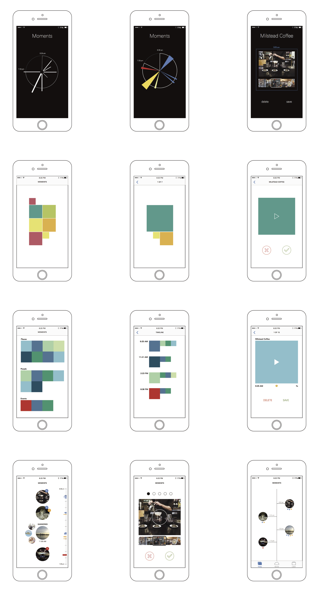

Project
Spex is a project that looks towards the future. With the potential reality that small line-of-sight cameras will become ubiquotous, how will we manage all of the media they create? This project sought to answer this question.
We imagined a pair of intelligent glasses that use a two way camera to unobtrusively check in with you throughout the day. Using data from pupillometry and facial recognition, the glasses could tell how you feel and capture pictures and videos that matter to you. We designed an accompanying mobile application that enabled intuitive sorting of the media gathered.
Team:
- Bonny Christopher
- Lyle Klyne
- Meredith Lampe
- Emma Teal Laukitis
- Natalie Lew
- Timothy Wong
My Role:
- Ideation
- Interaction Design
- Prototyping
- Graphic Effects
Tools used:
- Pen and paper
- Principle
- Sketch
- Illustrator
- After Effects
Spex at the core
-
Unobtrusive and transparent: put them on and go about your normal day. Forget about them. They will pay attention to you, but you don’t have to return the favor.
-
Encouraging of good behavior: don’t worry about taking your camera out when you see something interesting or beautiful. If you want to spex to capture something, pause and take it in. Smile. These are things we should all be doing — spex is a subtle reminder to stay present.
-
Easy on your personal time (and hard drive): spex wont overload you with media, but if they miss something, don’t worry. There is a complete history of your day that you can dig through to find that special gem. This information is yours alone and available for 24 hours.
Mobile Interface: Concepts
We looked at several options for displaying saved data. The team decided that flagged moments should be the primary focus of the mobile interface, and the unedited stream should be tucked away and only viewable when it’s needed. I created several several quick sketches for the interface to aid in brainstorming.

Mobile Interface: Gestures
With the goal of making the sorting process fun and intuitive, we settled on a gesture controlled tile system. Drag up (away) to delete, drag down (towards) to save, and drag right to expand. As the user holds their nger down, the tile expands to display larger photos or play videos.